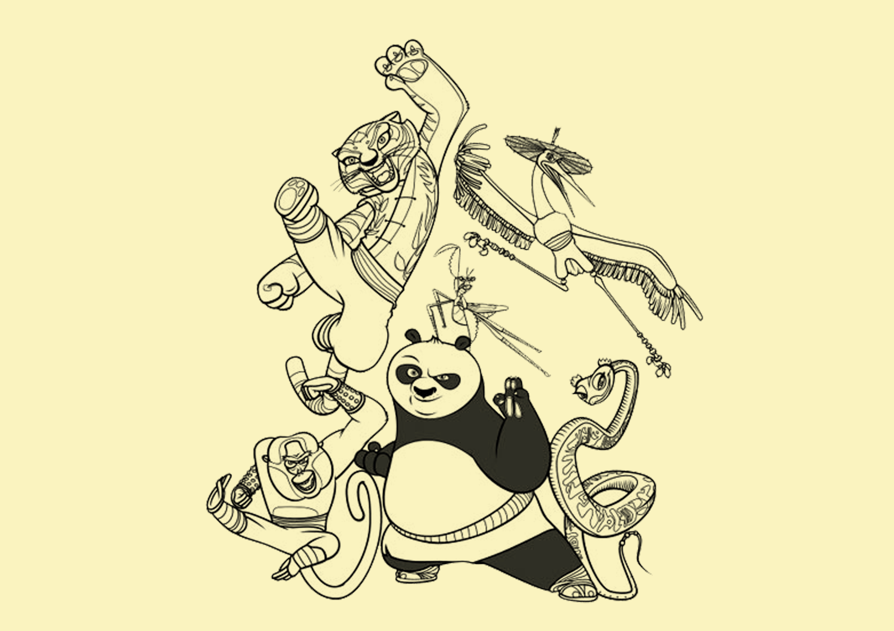

联系我们 Contact
影传学院
电话：11111111111
传真：2222-2222222
地址：广艺影传
网址：www.gxysxy.com
影传学院
电话：11111111111
传真：2222-2222222
地址：广艺影传
网址：www.gxysxy.com
这部梦工场出品的电脑动画片极富感染力而且激励人心，哪怕竭尽全力去抵御它的魅力。（《华盛顿邮报》评） 一部坦白的老式儿童影片，可预见的故事是它的使命之一，但是影片还不错，就是缺少意外。（《纽约每日新闻报》评） 梦工场终于为“史莱克”找到了继任者——功夫熊猫。（《comingsoon》评） 梦工场动画自《怪物史莱克》之后出品的最好影片。（《洛杉矶每日新闻报》评）
夏季大片耗资越来越多，却经常令观众感觉越来越无趣。简单而风格轻松的《功夫熊猫》是个例外。（《美联社》评） 尽管影片主要面向的是儿童观众，但《功夫熊猫》的幽默却适用于所有年龄段的人。（《好莱坞报道者》评） 杰克·布莱克、达斯汀·霍夫曼和伊安·麦克肖恩三个人的配音为影片增添了强劲的推动力。（《华盛顿时报》评） 非常好莱坞化、为迎合市场的老套影片，达不到本该有的灵感高度。（《底特律新闻报》评）
差评 既不像《料理鼠王》那样有原创性，也不如《怪物史莱克》滑稽搞笑。（《多伦多明星报》评） 对孩子而言有充分的娱乐性，对成年观众只能算稍有乐趣。（《拉斯维加斯周刊》评） 功夫熊猫中国媒体影片定义成功《功夫熊猫》和其他动画片不同的是， 其观众有很多非家庭类观众，尤其在上映时夜场中表现得特别明显。影片的定义概念是“会说话的动物、努力实现自己梦想”， 这样的主旨在电影市场上屡试不爽，对小朋友的吸引力很大，但《功夫熊猫》将年轻男性观众也吸引入场，其中17岁以上的观众占据了70%以上。（《广州日报》评）
角色诠释形象 影片很好的诠释了中国功夫的神髓，各个人物个性明显：乌龟大师的睿智、师父的心事、阿宝的执着、 娇虎的聪明勇敢冲动、仙鹤的厚道、金猴的沉稳、灵蛇的善良、螳螂的热心、 大龙的勇猛和残暴、平先生的智慧和山管家的胆小。其中阿宝带来笑料可不少。 影片告诉观众要成功必须建立自己的自信。这部影片还有值得警戒的地方， 比如，师父对大龙的溺爱导致了悲剧的发生。（《时代商报》评）
[详细]

联系人：李先生 12345678901
Copyright © 2016.网页设计.影片评价篇